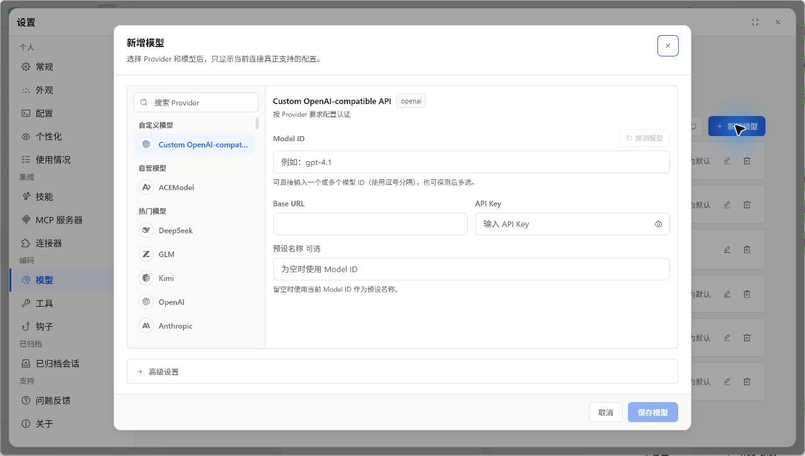
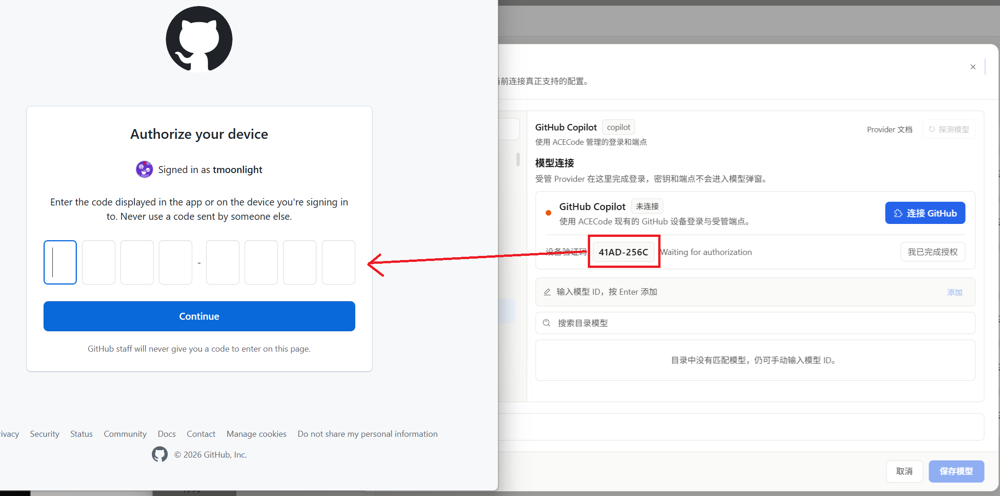

接入其他服务商
按实际接口协议选择 Provider，再填写服务给出的连接信息。不同服务商的认证方式和可选参数分别配置。
OpenAI 兼容接口
- 进入设置 > 模型 > 新增模型，选择自定义 OpenAI 兼容入口，或目录中对应的服务商。
- 填写 Base URL 和 API Key，输入服务实际支持的 Model ID。
- 需要完整请求地址时，在高级设置中切换端点模式。
- 保存后选择这个预设，发送简短请求验证。
| 端点模式 | 该填写什么 |
|---|---|
| Base URL | API 基础地址，例如 https://api.example.com/v1；由客户端构造对应请求端点。 |
| 完整端点 | 服务要求的完整请求 URL；不要再按基础地址的方式重复拼接路径。 |
这里的示例域名不是可用服务。请复制服务商给出的实际地址；同一平台可能有不同协议的入口。需要额外认证头时，在高级设置填写自定义请求头 JSON，保持合法 JSON 对象。
支持探测时可以点击探测模型读取服务返回的模型 ID。无法列出模型的兼容服务仍可手填 Model ID，随后用真实请求验证。
{kind=link}

Anthropic
选择 Anthropic 协议的 Provider，填写对应 Messages API 的地址、密钥和模型 ID。不要仅因模型名称中包含 Claude 就选择 Anthropic；若服务提供的是 OpenAI 兼容代理，应按它实际提供的协议选择。
- 确认账号或代理提供哪种协议和认证方式。
- 选择匹配的 Provider，再填入该接口地址与凭据。
- 从可用目录选择模型，或填写准确的模型 ID。
- 仅在表单支持时配置推理开关、强度或预算。
- 保存后先进行一次普通文本请求，再验证工具任务。
推理字段因模型而异，必需推理的模型不能随意关闭。遇到无效参数错误，先核对该模型的高级设置，而不是不断更换同一地址下的名称。
GitHub Copilot
GitHub Copilot 使用设备登录流程。模型页的模型连接卡片提供连接 GitHub，认证由该入口管理，模型弹窗不要求手动填写受管端点和密钥。
- 点击连接 GitHub，查看设备验证码。
- 在打开的系统浏览器中完成 GitHub 授权。
- 回到 ACECode，按需要点击我已完成授权，确认状态为已连接。
- 新增一个 GitHub Copilot 模型预设并保存。
- 在任务中选择预设，验证账号可以访问该模型。
验证码过期或授权未完成时重新发起登录。已连接只表示认证流程成功，实际模型访问仍由账号权限和服务状态决定。需要切换账号时使用连接卡片中的退出连接。
{kind=link}
